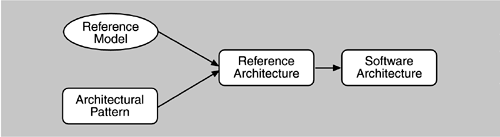

2.3 Architectural Patterns, Reference Models, and Reference Architectures
Between box-and-line sketches that are the barest of starting points and full-fledged architectures, with all of the appropriate information about a system filled in, lie a host of intermediate stages. Each stage represents the outcome of a set of architectural decisions, the binding of architectural choices. Some of these intermediate stages are very useful in their own right. Before discussing architectural structures, we define three of them.
An architectural pattern is a description of element and relation types together with a set of constraints on how they may be used.
A pattern can be thought of as a set of constraints on an architecture—on the element types and their patterns of interaction—and these constraints define a set or family of architectures that satisfy them. For example, client-server is a common architectural pattern. Client and server are two element types, and their coordination is described in terms of the protocol that the server uses to communicate with each of its clients. Use of the term client-server implies only that multiple clients exist; the clients themselves are not identified, and there is no discussion of what functionality, other than implementation of the protocols, has been assigned to any of the clients or to the server. Countless architectures are of the client-server pattern under this (informal) definition, but they are different from each other. An architectural pattern is not an architecture, then, but it still conveys a useful image of the system—it imposes useful constraints on the architecture and, in turn, on the system.
One of the most useful aspects of patterns is that they exhibit known quality attributes. This is why the architect chooses a particular pattern and not one at random. Some patterns represent known solutions to performance problems, others lend themselves well to high-security systems, still others have been used successfully in high-availability systems. Choosing an architectural pattern is often the architect's first major design choice. The term architectural style has also been widely used to describe the same concept. A reference model is a division of functionality together with data flow between the pieces.
A reference model is a standard decomposition of a known problem into parts that cooperatively solve the problem. Arising from experience, reference models are a characteristic of mature domains. Can you name the standard parts of a compiler or a database management system? Can you explain in broad terms how the parts work together to accomplish their collective purpose? If so, it is because you have been taught a reference model of these applications. A reference architecture is a reference model mapped onto software elements (that cooperatively implement the functionality defined in the reference model) and the data flows between them.
Whereas a reference model divides the functionality, a reference architecture is the mapping of that functionality onto a system decomposition. The mapping may be, but by no means necessarily is, one to one. A software element may implement part of a function or several functions.
Reference models, architectural patterns, and reference architectures are not architectures; they are useful concepts that capture elements of an architure. Each is the outcome of early design decisions. The relationship among these design elements is shown in Figure 2.2.

People often make analogies to other uses of the word architecture, about which they have some intuition. They commonly associate architecture with physical structure (buildings, streets, hardware) and physical arrangement. A building architect must design a building that provides accessibility, aesthetics, light, maintainability, and so on. A software architect must design a system that provides concurrency, portability, modifiability, usability, security, and the like, and that reflects consideration of the tradeoffs among these needs.
Analogies between buildings and software systems should not be taken too far, as they break down fairly quickly. Rather, they help us understand that the viewer's perspective is important and that structure can have different meanings depending on the motivation for examining it. A precise definition of software architecture is not nearly as important as what investigating the concept allows us to do.
|